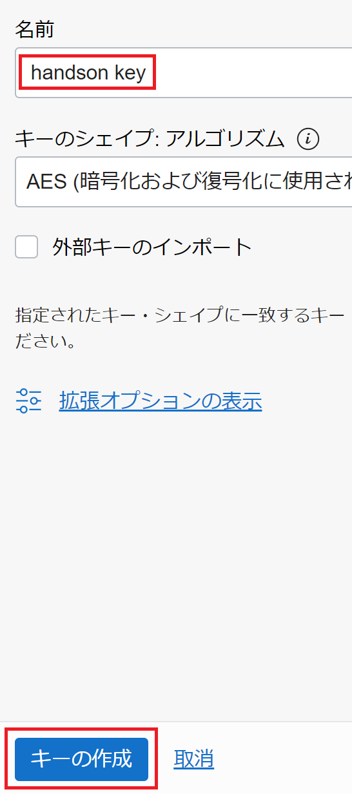

前提条件
- クラウド環境
- Oracle Cloudのアカウントを取得済みであること
ハンズオンの全体像
- プロビジョニングの準備
- WebLogic Server for OKE(UCM)環境をプロビジョニング
- WebLogic Server for OKEにドメインを作成
ハンズオンで作成されるリソース全体
WebLogic Server for OKEでは、様々なリソースが自動で構成されます。
以下は作成されるリソースの全体像になります。
1.プロビジョニングの準備
1.1. コンパートメントの作成
WebLogic Server for OKEの環境をプロビジョニングするコンパートメントを作成します。
左上のナビゲーション・メニューを展開して、「コンパートメント」を選択してください。
「コンパートメントの作成」をクリックし、「wls4oke」コンパートメントを作成します。
※作成したコンパートメントのOCIDをコピーしてメモなどに貼り付けておいてください。
1.2. 動的グループの作成
WebLogic Server for OKEのプロビジョニングで利用される動的グループを作成します。
左上のナビゲーション・メニューを展開して、「動的グループ」を選択してください。
動的グループの名前は「handson」とします。
一致ルールには以下のルールを記述してください。コンパートメントのOCIDは、1.1.でコピーしておいたものを利用してください。
instance.compartment.id = <作成したコンパートメントのOCID>
1.3. ポリシーの設定
WebLogic Server for OKEのプロビジョニングに必要なポリシーを作成します。
左上のナビゲーション・メニューを展開して、「ポリシー」を選択してください。
まずは「ルート・コンパートメント」に以下のポリシーを作成します。
「ポリシーの作成」から<mygroup>はご自身のアカウントが所属するグループに置き換えてポリシーを作成してください。
「手動エディタの表示」をONにすると、そのまま貼り付けすることができます。
Allow group <mygroup> to inspect tenancies in tenancy
Allow group <mygroup> to use tag-namespaces in tenancy
次に「wls4oke」コンパートメントに以下のポリシーを作成します。
Allow group <mygroup> to manage all-resources in compartment wls4oke
Allow dynamic-group handson to manage all-resources in compartment wls4oke
Allow service oke to read app-catalog-listing in compartment wls4oke
1.4. Auth Tokenの作成
WebLogic Server for OKEのプロビジョニングに必要なAuth Tokenを作成します。
右上のプロファイルを展開して、ご自身のアカウントを選択してください。
左メニューより「認証トークン」を選択し、「トークンの作成」からトークンを作成してください。
この時、作成したトークンは必ずコピーしてメモなどに残しておいてください。再度確認することはできません。
1.5. SSHキーペアを用意する
任意のSSHキーペアをご用意ください。
新たに作成する場合は、左上のハンバーガーメニューを展開して、「コンピュート」から「インスタンス」を選択し、「インスタンスの作成」をクリックします。
作成画面より、SSHキーの「秘密キー」と「公開キー」の両方をダウンロードし、利用します。

1.6. OCI VaultでSecretを作成する
WebLogic Server for OKEでは、WebLogic作成時の管理用パスワードはOCI Vaultにて管理します。
左上のハンバーガーメニューを展開して、「アイデンティティとセキュリティ」から「ボールト」を選択します。
「ボールトの作成」をクリックします。
名前に「handson vault」と入力し、「ボールトの作成」をクリックします。

ボールトの作成には数分かかる場合があります。適宜ブラウザの更新を行ってください。
作成したボールト名をクリックし、「キーの作成」をクリックします

名前に「handson key」と入力し、「キーの作成」をクリックします。

「シークレット」をクリックし、「シークレットの作成」をクリックします。
名前に「authtoken」と入力し、シークレットコンテンツは「1.4. Auth Tokenの作成」で作成したトークンを入力し、シークレットを作成します。
2.WebLogic Server for OKE(UCM)環境をプロビジョニング
2.1. マーケットプレイスにてスタックを起動する
左上のハンバーガーメニューを展開して、「マーケットプレイス」から「すべてのアプリケーション」を選択します。

検索欄に「Oracle WebLogic Server Enterprise Edition for OKE UCM」と入力し、先頭に出てくるパネルをクリックします。
バージョンはデフォルトのまま、コンパートメントは「wls4oke」を選択します。
チェックボックスにチェックを入れ、「スタックの起動」をクリックします。
2.2. WebLogic Server for OKEをプロビジョニングする
Note: 特に記載のない部分に関してはデフォルトの値で構いません
「次」をクリックします。
「名前」は「Oracle WebLogic Server Enterprise Edition for OKE UCM」など任意の名前に設定して構いません。
ここからの手順は、特に指定のない箇所はデフォルトのままで構いません。
「Resource Name Prefix」 に「wls4oke」と入力します。
「SSH Public Key」では、事前準備で作成したSSH Keyを選択します。
「Network」は 「Create New VCN」を選択します。
「Container Cluster (OKE) Configuration」ではコンピュートのシェイプを選択します。
任意のもので構いません。下の表は一例です。
「Administration Instances」においてもコンピュートのシェイプを選択します。
任意のもので構いません。下は一例です。
「File System」は任意のAvailability Domainを選択します。下は一例です。
「Registry (OCIR)」の情報を入力します。 Registry User NameにはOCIRのユーザ名を入力します。※ここで入力するユーザ名はテナンシ名を含まない以下のいずれかのフォーマットで入力します。
- IAMユーザ xxx@yyy.zzz の場合： xxx@yyy.zzz
- IDCSユーザ xxx@yyy.zzz の場合：oracleidentitycloudservice/xxx@yyy.zzz
「OCIR Auth Token Compartment」は「wls4oke」
「Validated Secret for WebLogic Server Admin Password」では、作成したAuth Tokenのシークレット(authtoken)を選択します。
「OCI Policies」のチェックを外します。
「次」をクリックし、「作成」をクリックします。プロビジョニングには30分ほどかかります。 プロビジョニングが完了すると、ログの最後に以下の情報が出力されます。
- 管理ホストや踏み台ホストのアドレス
- Jenkinsコンソールへの接続先の調べ方
Admin_Instance_Id = ocid1.instance.oc1.... Admin_Instance_Private_IP = [ "**.*.*.*", ] Bastion_Instance_Id = ocid1.instance.oc1.... Bastion_Instance_Public_IP = [ "***.***.***.***", ]
-
WebLogic Server for OKEにドメインを作成
3.1. Jenkinsコンソールにアクセス
Jenkinsコンソールへアクセスします。ブラウザを利用するPCからSSHクライアントを利用して踏み台ホストを経由したSOCKSプロキシを構成し、プライベートロードバランサにアクセスします。
WLS for OKEプロビジョニング後のログや、直接OCIコンソールを利用して、以下の情報を確認しておきます。
- 踏み台ホストのIPアドレス
- プライベート・ロードバランサのIPアドレス
- JenkinsコンソールへのURL (
http://<プライベート・ロードバランサのIP>/jenkins)
以下のSSHコマンドでSOCKSプロキシを構成します。
ssh -D <SOCKSプロキシ用のポート> -fCqN -i <SSH秘密鍵のパス> opc@<踏み台ホストのIP>
- SOCKSプロキシ用のポート：PC側の任意のポート番号 (標準ポートの場合 1088)
- SSH秘密鍵のパス：事前準備で作成したSSHキーペアの秘密鍵のパス
- 踏み台ホストのIP：事前に確認した踏み台ホストのパブリック・アドレス
Webブラウザ側でSOCKSプロキシを利用する設定を行い、JenkinsコンソールのURLにアクセスします。
- Chrome/Edgeの場合のプロキシ設定: 起動時オプションに “–proxy-server=”socks5://127.0.0.1:1088” を追加して起動 または、Windowsの場合 インターネットオプション からOS上の設定として適用
- Firefoxの場合のプロキシ設定: 設定 -> 一般 -> ネットワーク設定 -> 接続設定 から、「手動でプロキシーを設定する」を選択し、SOCKSホストに 127.0.0.1、ポートに1088、を設定し SOCKS v5 を選択
最初にJenkinsコンソールにアクセスした時には、管理アカウントの作成を行う必要があります。
任意の値で構いませんが、アカウント名とパスワードは保管しておいてください。
ログイン成功の画面のリンクからJenkinsコンソールのダッシュボードに遷移します
3.2. Jenkinsコンソールからドメインの作成
ドメイン作成のためのJenkinsジョブを実行します。「create domain」のジョブを選択してください。
「WebLogic Server on Container Cluster」では以下のように設定します。
| パラメータ | 設定する内容 |
|---|---|
| Domain_Name | 作成するWebLogicドメインの名前。 ここでは demo00。 |
| WebLogic_Version | WebLogicのバージョン。 ここでは 12.2.1.4。 |
| Base_Image | 使用するベース・イメージ。 ここでは選択せず (Select_Base_Imageのまま) プロビジョニング時に登録されたものを利用。 |
| Administration_Username | WebLogic管理ユーザの名前。 ここでは weblogic |
| Administration_Password | WebLogic管理ユーザのパスワード。 ここでは welcome1 |
| Managed_Server_Count | 作成する管理対象サーバの数。(最大9) ここでは 2 |
| Patch_Automatically | 定期的な自動パッチを設定する場合にチェック。 ここでは「チェックしない」 |
| Cleanup_Domain_Resource | 以前に作成に失敗した同じドメインがある場合に削除する場合にチェック。 ここでは「チェックしない」 |
「Container Cluster (OKE) Configuration」では以下のように設定します。
| パラメータ | 設定する内容 |
|---|---|
| WebLogic_Node_Pool_Type | 新しくWebLogic Node Poolを作るか、既存Poolを使うかを選択。 ここでは Existing_Node_Poolを選択。 |
| Existing_Node_Pool | 利用するWebLogic Node Poolを選択。 ここでは wls4oke-wls-np (プロビジョニング時に作成されたもの) |
「Load balancer Configuration」では以下のように設定します。
| パラメータ | 設定する内容 |
|---|---|
| External_Lb_Shape_Min | 作成するフレキシブル・ロードバランサの最小の帯域。 ここでは 10を指定。 |
| External_Lb_Shape_Max | 作成するフレキシブル・ロードバランサの最大の帯域。 ここでは 400を指定。 |
各設定を入力後、ページ最後の 「ビルド」ボタンでパイプラインのビルドを開始します。 ビルドの実行状況は処理状況に合わせてアップデートされていきます。 各ステップが完了(10分強)するとWLSドメインの作成が完了し、プライベート・ロードバランサを経由してWLS管理コンソールにアクセスできるようになります。
3.3. WebLogic管理コンソールへのアクセス
以下のURLを用いて管理コンソールへのアクセスが可能です。
http://<プライベート・ロードバランサのIP>/<WLSドメイン名>/console
以下のユーザー名とパスワードを利用してログインが可能です。
- ユーザー名:
weblogic - パスワード:
welcome1